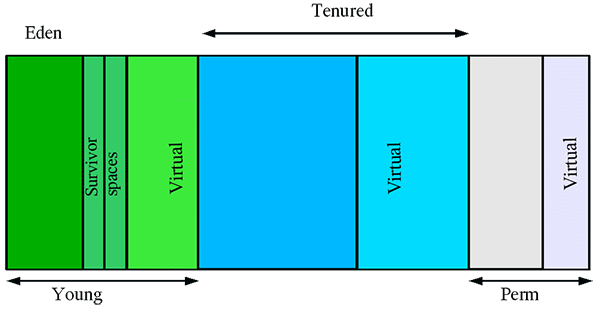
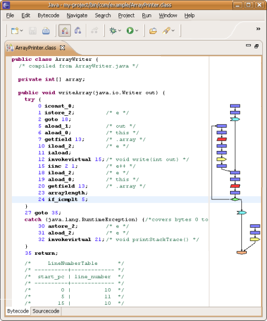

Write Once, Run Anywhere
Sun
Разработка джавы началась с языка названого Oak. Проект был запущен SUN в 1991 и назывался "Green Project". Позднее язык был переименован в Java в честь кофе (т.к. по словам разработчиков, они поглащали его в больших колличествах).
Проект задумывался как простая альтернатива языкам c/c++. Предпологалось использовать его для PDA и интерактивного телевидиния. Но после серии неудач было приянто решение сместить фокус в сторону сетевых приложений. Появился новый браузер WebRunner, позднее переименнованый в HotJava, который поддреживал джава апплеты.
В первые Sun запустила джаву в 1995, под лозунгом "Write Once, Run Anywhere". Со временем большинство браузеров ввело поддрежку джава апплетов и язык стал очень популярным.
На сегодняшний день джава представляет собой высокоуровневый ООП язык и платформу.
Java Card API позволяет программам, написанным на языке Java, исполняться безопасным образом на интеллектуальных картах и других устройствах с ограниченными ресурсами (SIM, GSM, ATM). Приложения, написанные для платформы Java Card называются апплетами.
Виртуальная Java Card машина состоит из двух частей, одна из которых работает непосредственно на самой карте, а другая – на хост-машине вне карты. Вне Java Card исполняются такие процессы, как загрузка классов, проверка байт-кода, оптимизация и т.п.
Эта платформа была создана для выполнения на широком круге мобильных и встренных систем. Например: мобильные телефоны, КПК, телевизионные приставки и принтеры.
Среди мобильных устройств сущетвует огроммная разница в их возможностях. Различные рамеры экрана, колличество оперативной памяти и тд. Для решения этой проблемы J2ME предоставляет концепцию конфигураций и профилей. Конфигурация представляет собой подмножество требований утсройства. Профиль это апи, который сидит поверх этой конфигурации и позволяет использовать специфичные возможности данного устройства.
С помощью стандартной платформы можно создовать и развертывать Java-приложения для настольных компьютеров и серверов, а также разрабатывать встроенное программное обеспечение и программы для систем реального времени.
Редакция включает в себя библиотеки для создания web-сервисов и базовые компоненты JavaEE.
Технологии входящие в Java SE: Java Foundation Classes (Swing), JavaHelp, Java Native Interface (JNI), Java Platform Debugger Architecture (JPDA), Java 2D API, Java Web Start, Certification Path API, Java Database Connectivity (JDBC), Java Advanced Imaging (JAI), Java Authentication and Authorization Service (JAAS), Java Data Objects (JDO), Java Management Extensions (JMX), Java Media Framework (JMF), Java Naming and Directory Interface (JNDI), Java Secure Socket Extensions (JSSE), Java Speech API (JSAPI), Java 3D, Metadata Facility, Java Content Repository API, Enumerations, Generics, Concurrency, Java API for XML Processing (JAXP), SOAP with Attachments API for Java (SAAJ).
Эта корпоративная версия платформы помогает разработчикам создавать и развертывать переносимые, надежные, масштабируемые и безопасные серверные приложения на Java.
Технологии, входящие в состав J2EE: Enterprise JavaBeans (EJB), Спецификация портлетов, JavaMail, Java Message Service (JMS), JavaServer Faces (JSF), JavaServer Pages (JSP), Стандартная библиотека тегов для JavaServer Pages (JSTL), Сервлеты Java, J2EE Connector Architecture (JCA), Спецификация J2EE Management (JMX), Java Transaction API (JTA)
JavaFX — это очередной язык со строгой типизацией программирования + runtime к нему. Как и обычная Java, JavaFX компилируется в байт код в виде .class файлов.
Т.к. JavaFX и Java выполняются на одной и той же виртуальной машине, ничего не мешает разработчикам использовать Java код в проектах под JavaFX. С выходом Java 8 Oracle планирует включить JavaFX в стандартные JRE/JDK
Основное применение - создание клиентских приложений, которые могут выполнятся либо в браузоре (внутри Java-апплета), либо на прямую на клиентской машине. Так же предпологается выполениние на мобильных телефонах (с поддержкой JavaME) и телевизорах с Java.
В JavaFX большое внимание уделено пользовательскому интерфейсу и созданию Rich Internet Applications (RIA). Во многом JavaFX схож с Flash и Silverlight.
public class MyClass<E> {
public static void myMethod(Object item) {
if (item instanceof E) { // Ошибка компиляции
...
}
E item2 = new E(); // Ошибка компиляции
E[] iArray = new E[10]; // Ошибка компиляции
}
}Виртуальная машина Java интерпретирует и исполняет байт-код Java, предварительно созданный из исходного текста Java-программы компилятором Java. В 1996 г. компания Sun выпустила первую версию документа «Голубая книга JVM», в котором описана спецификация виртуальной машины Java. Благодаря этому документу появились альтернативные реализации JVM.
На сегодняшний день считается, что выполнение Java кода в 1.5 раза медленней чем C.
HotSpot использует generation garbage collection.
Использование поколений сокращает время цикла сборки мусора, поскольку уменьшается число просматриваемых в ходе сборки объектов.
Java байт-код (Java bytecode) – машинно-независимый код, который генерирует Java-компилятор. Байт-код выполняется Java-интерпретатором. Виртуальная машина Java полностью стековая: не требуется сложная адресация ячеек памяти и большое количество регистров. Поэтому команды JVM короткие, большинство из них имеет длину 1 байт, отчего команды JVM называют байт-кодами (bytecodes), хотя имеются команды длиной 2 и 3 байта.
Джава апплеты это программы, которые выполняются встаиваются в веб страничку и выполняются в веб браузоре.
// Hello.java
import javax.swing.JApplet;
import java.awt.Graphics;
public class Hello extends JApplet {
public void paintComponent(final Graphics g) {
g.drawString("Hello, world!", 65, 95);
}
}
<applet code="Hello.class" width="200" height="200"></applet>
Сервлеты позволяют расширять фунуциональность веб серверо. Сервлеты выполняются на стороне сервера, их главная задача генерировать ответ (responce) на запрос (http request) от клиента.
// Hello.java
import java.io.*;
import javax.servlet.*;
public class Hello extends GenericServlet {
public void service(final ServletRequest request, final ServletResponse response)
throws ServletException, IOException {
response.setContentType("text/html");
final PrintWriter pw = response.getWriter();
try {
pw.println("Hello, world!");
} finally {
pw.close();
}
}
}
Языки которые были добавлены в JVM
Языки, которые создовались для JVM
/
#